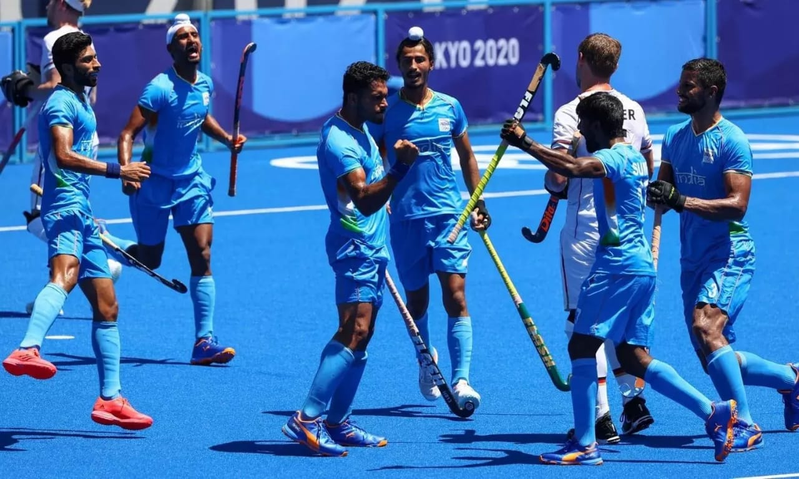

SPORTS
A Thrilling blend of competition, passion, and physical excellence that unites and inspires across boundaries

Sport Wikipedia
Summary
Sports are a universal language that transcends borders, cultures, and generations. Whether played on dusty fields, polished courts, or icy rinks, they bring people together through shared passion, discipline, and the thrill of competition. At their heart, sports teach resilience—how to rise after a fall, how to push limits, and how to work as a team or shine as an individual. From the roar of the crowd to the quiet focus before a crucial move, sports are a celebration of human potential, both physical and mental. They’re not just games—they’re stories of triumph, heartbreak, and the relentless pursuit of greatness.
Sports are organized physical activities or games that involve skill, competition, and often teamwork. They can be played for fun, fitness, or professionally, and they exist in nearly every culture around the world.
History
The History of sports is a fascinating journey through human civilization—where physical activity, competition, and culture have always been deeply intertwined. Let’s take a quick tour through time
Ancient Biginings
- Prehistoric Times: Cave paintings in places like France and Egypt suggest early humans engaged in running, swimming, and archery as far back as 10,000 BCE.
- Ancient Sumer & Egypt: Wrestling and boxing were popular, often linked to military training and rituals.
- China & India: Martial arts and chariot racing were practiced, often tied to spiritual or royal traditions
Sports Culture
Classical Era
- Ancient Greece: The Olympic Games began in 776 BCE, featuring events like wrestling, discus, and chariot racing. Sports were seen as a way to honor the gods and build heroic character.
- Rome: Gladiator contests and chariot races were held in massive arenas like the Colosseum—more about spectacle than sport.
Types of Sports
- Outdoor sports: Football, cricket, athletics, cycling, etc.
- Indoor sports: Badminton, table tennis, gymnastics, chess (yes, even mind sports count!).
- Team sports: Basketball, hockey, volleyball.
- Individual sports: Tennis, boxing, swimming.
reference
List of Sports
Images



Education
Education in Sports: A Holistic Approach to Learning
Education in sports goes far beyond physical fitness—it’s a powerful tool for shaping character, enhancing cognitive skills, and promoting lifelong well-being. Through structured physical education programs and extracurricular sports, students learn discipline, teamwork, leadership, and resilience. According to the Sport Education model, game-based learning tailored to age groups fosters engagement and skill development. In India, initiatives like Samagra Shiksha provide annual grants for sports equipment, ensuring inclusive access across government schools.
Moreover, sports in education contribute to:
- Physical health: Reducing obesity and improving motor skills
- Mental well-being: Boosting self-esteem and reducing stress
- Academic performance: Enhancing concentration and memory
- Social development: Cultivating empathy, cooperation, and ethical behavior
The National Education Policy (NEP) 2020 emphasizes integrating sports into the curriculum to support all-round development. With proper infrastructure, trained educators, and inclusive policies, sports education can transform classrooms into arenas of growth and empowerment.
Politics
General Political Themes
- The art of Governance and public decision-making
- Balancing power, justice, and representation
- Involves institutions like parliaments, courts, and political parties
Current Political Climate
- Coalition Dynamics: National politics often involve alliances like the NDA (led by BJP) and INDIA bloc (opposition alliance). These coalitions shape election strategies and governance.
- State-Level Shifts: Leaders like Nitish Kumar in Bihar and MK Stalin in Tamil Nadu influence regional politics and national debates.
- Youth & Social Media: Political engagement is rising among young voters, especially through platforms like Instagram and YouTube.
Key Issues in Indian Politics
- Caste and Identity Politics: Caste-based voting patterns and demands for reservation continue to shape elections.
- Economic Development: Debates around job creation, inflation, and welfare schemes dominate campaigns.
- Secularism vs. Nationalism: Tensions between religious freedom and majoritarian narratives are often at the forefront.
- Corruption and Governance: Anti-corruption movements (like Anna Hazare’s) have led to new parties and reforms.
Tips or Key points
Importance of Sports
- Builds physical fitness and mental strength
- Teaches discipline, teamwork, and leadership
- Boosts confidence and reduces stress
- Encourages healthy competition and goal-setting
- Promotes national pride and unity during international events
Life Lessons from Sports
- Win with humility, lose with grace
- Practice and perseverance lead to success
- Respect for rules and fair play is essential
- Failure is part of growth—every loss teaches something
Social Impact
- Sports can bridge cultural gaps and promote peace
- Athletes often become role models and voices for change
- Sports events create economic opportunities and tourism
Tips for Speaking or Writing About Sports
- Start with a powerful quote or story (e.g., “Sports do not build character. They reveal it.” – Heywood Broun)
- Use real-life examples (like Neeraj Chopra’s Olympic gold or Messi’s World Cup win)
- Highlight both individual and team sports
- Mention challenges like doping, corruption, or lack of funding
- End with a motivational message or call to action
Definition
Sports are activities involving physical exertion and skill, in which individuals or teams compete against one another for entertainment
Usage
Sports are competitive physical activities that require skill, strategy, and effort. They can be played individually or in teams, often governed by rules. Sports promote fitness, teamwork, and entertainment. Popular examples include football, cricket, and athletics.
Participation
Participation in sports refers to actively engaging in physical activities or games, either recreationally or competitively. It promotes health, teamwork, and social interaction. People participate in sports through schools, clubs, communities, or professional leagues. Regular involvement builds discipline, confidence, and a sense of belonging.
Technology
Technology in sports has revolutionized how games are played, watched, and managed. Here’s a quick snapshot:
- Performance Enhancement: Athletes use wearables, sensors, and AI tools to track fitness, improve technique, and prevent injuries.
- Fan Experience: Virtual reality, augmented reality, and smart stadiums make watching sports more immersive and interactive.
- Fair Play: Systems like VAR in football and Hawk-Eye in tennis ensure accurate decisions and reduce human error.
- Coaching & Analysis: AI-powered apps and video analysis help coaches refine strategies and give personalized feedback
Further Reading
Further reading in sports opens up a deeper understanding of athletic culture, performance, and philosophy. Books like A Philosopher Looks at Sport explore the ethical and emotional dimensions of competition, while Sport: A Very Short Introduction offers insights into the social and historical impact of sports across cultures. Scholars also examine coaching strategies, gender dynamics, and the evolution of sports in capitalist societies. These resources help readers appreciate not just the game, but the values and controversies that shape it. Whether you're a player, coach, or fan, diving into sports literature can transform how you see the field.
Reference
Mind Sports
Youth Sports
Sports in India